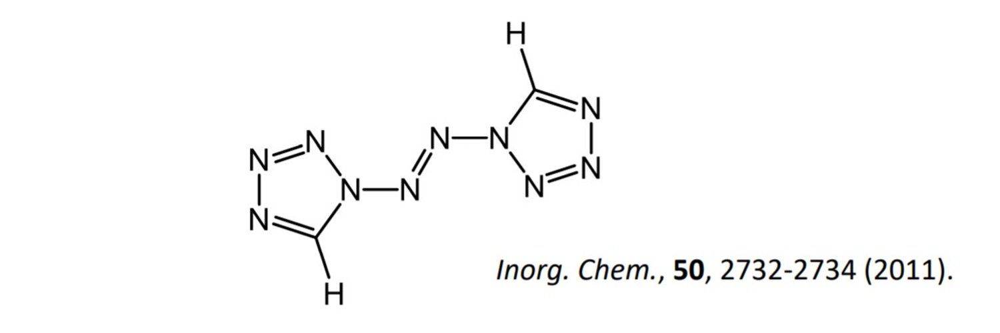

て
趣味についてのおはなしをちょっと
思い返してみるといくつかきっかけがあった．
最初は高2ぐらいにスマホで音ゲーをやっていたころ「乃木フェス」を入れたこと．
ライブ映像とかも見られるし，知らない曲でいいな～と思うものが結構あった
次は高3．日向坂がデビューしその後，欅坂日向坂の音ゲー「ユニゾン エアー」がリリースされ始める．
これで欅坂やけやき坂，日向坂の曲を少し知る．
そして去年，お家時間の増加により乃木坂工事中をリアルタイムで見るようになる．
ピアノをちょっと練習しようと思って乃木坂の曲を適当に練習してみたら「I see...」のサビが弾けるようになった（と思う）
結果的に推しが増えてしまい，かっきー，らんぜ，きょんこが推しです
夜明けまで強がらなくてもいい
偶然を言い訳にして（2ndシングルカップリング）
白石・高山・橋本・松村
さゆりんご募集中
さゆりんご軍団